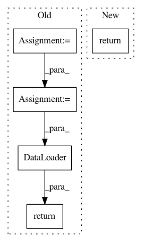

854a2bcc7697f205ed1995c66b425b245b3b9e8d,autokeras/preprocessor.py,TextDataTransformer,transform_test,#TextDataTransformer#Any#Any#Any#,157
Before Change
Transform the testing dataset.
dataset = text_transform(compose_list=[], data=data, targets=targets)
if batch_size is None:
batch_size = Constant.MAX_BATCH_SIZE
batch_size = min(len(data), batch_size)
return DataLoader(dataset, batch_size=batch_size, shuffle=True)
class ImageDataTransformer(DataTransformer):
Perform basic image transformation and augmentation.
After Change
def transform_test(self, data, targets=None, batch_size=None):
Transform the testing dataset.
return self.transform_train(data, targets=targets, batch_size=batch_size)
class ImageDataTransformer(DataTransformer):
Perform basic image transformation and augmentation.
In pattern: SUPERPATTERN
Frequency: 3
Non-data size: 5
Instances
Project Name: keras-team/autokeras
Commit Name: 854a2bcc7697f205ed1995c66b425b245b3b9e8d
Time: 2019-03-27
Author: 45730028+yufei-12@users.noreply.github.com
File Name: autokeras/preprocessor.py
Class Name: TextDataTransformer
Method Name: transform_test
Project Name: inferno-pytorch/inferno
Commit Name: 1f2385d79dc9d1c042df2f1342a5239d55e63edd
Time: 2018-01-22
Author: steffen.wolf@iwr.uni-heidelberg.de
File Name: inferno/io/box/bsd500.py
Class Name:
Method Name: get_bsd500_loaders